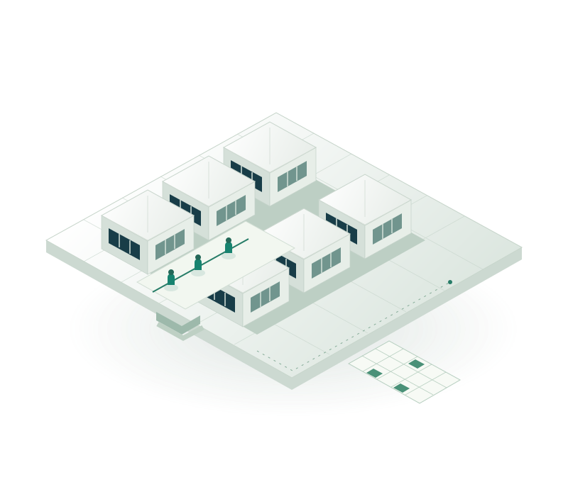

GESTÃO DE ESCALAS MÉDICAS
Inteligência
operacional para
sustentar o cuidado.
Gestão de escalas médicas que conecta profissionais, setores e horários a uma operação mais organizada.
Da complexidade à continuidade do cuidado

Uma operação que precisa funcionar em conjunto.
- 01 Unidade
- 02 Setores
- 03 Profissionais
- 04 Plantões
- 05 Escala
Da mesma matéria: a arquitetura se torna relação.
REPRESENTAÇÃO CONCEITUAL
02 — ESCALA VIVA
Uma escala não é
Uma escala não é
somente uma grade.
Setor, período e profissional formam um contexto.
Explorar a gestão de escalas- 01 Onde
- 02 Quando
- 03 Quem
- 04 Contexto
03 — PESSOAS → CUIDADO
Toda organização
Toda organização
termina em pessoas.
Uma escala estruturada conecta horários às pessoas e às necessidades da instituição. É assim que a organização operacional encontra seu propósito: apoiar a continuidade do atendimento.
04 — CONVERGÊNCIA
Organização a serviço
COMPLEXIDADE → ORGANIZAÇÃO → CLAREZA
Organização a serviço
da continuidade.
A Escalare é especializada em organização e gestão de escalas médicas, conectando profissionais, processos e necessidades assistenciais.